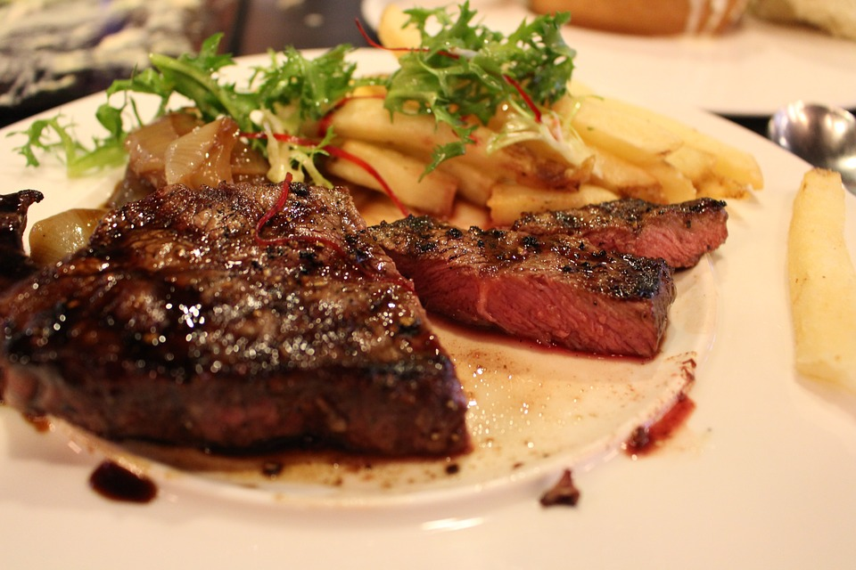

| Ingredients | Directions |
|---|---|
| Seasoning |
Put the seasoning on the steak. It could be as simple as a bottle of steak seasoning. |
| Steak | Grill the steak on the grill until medium |
| Baked Potato |
Bake the potato on the grill. Mash potato after taking off grill and add toppings. |
| Bacon | Put bacon on baked potato |
| Cheese | Cover baked potato with cheese |
| Sour Cream | Add sour cream to the baked potato |
For extra flavoring you can add salt, pepper, and butter to potato